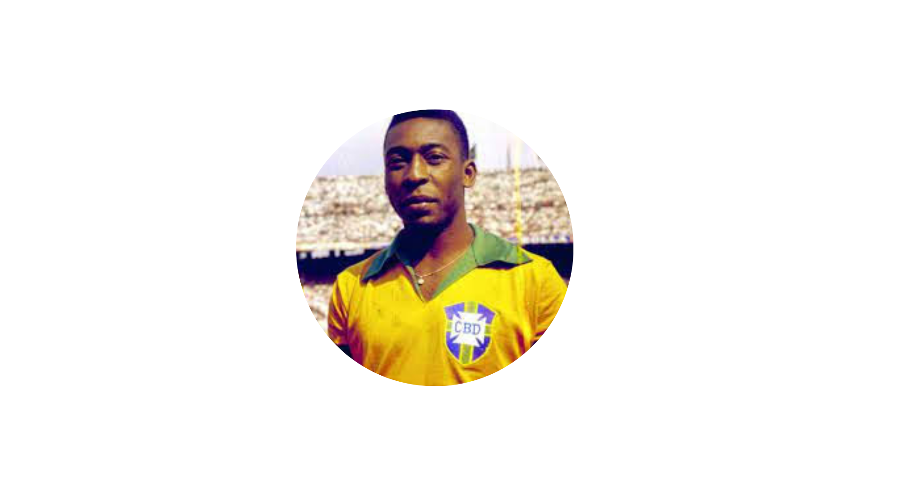

Edson Arantes do Nascimento
Meu Perfil
|
 |
Edson Arantes do NascimentoJogador de Futebol Resumo ProfissionalEdson Arantes do Nascimento, conhecido mundialmente como Pelé, foi um atleta e ex-futebolista profissional amplamente reconhecido como o maior jogador de futebol de todos os tempos e eleito "Atleta do Século" pelo Comitê Olímpico Internacional. |
Experiencias Profissionais
- 1958
Com apenas 17 anos, Pelé estreou na Copa de 1958 a partir do terceiro jogo e tornou-se a grande revelação do torneio, marcando seis gols na fase final. Seu desempenho genial incluiu o gol da vitória sobre o País de Gales nas quartas e três gols contra a França na semifinal.
- 1962
A Copa do Mundo de 1962, realizada no Chile, representou um capítulo de superação e contraste na carreira de Pelé. Após o brilho e a conquista de 1958, o camisa 10 chegou ao torneio no auge de sua forma física e técnica, sendo a grande esperança da Seleção Brasileira para buscar o bicampeonato mundial.
- 1970
A Copa do Mundo de 1970, no México, marcou a consagração definitiva de Pelé na história do esporte. Aos 29 anos e em sua quarta participação em Mundiais, o camisa 10 liderou uma das equipes mais espetaculares de todos os tempos, combinando maturidade, técnica impecável e genialidade em campo.